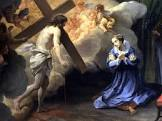
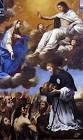
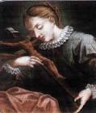
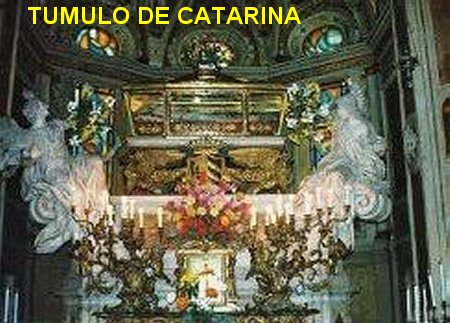

“CARIDADE E
SANTIDADE”
JESUS AMOROSO

Quando chegou ao
lar, foi direto para o quarto e ficou refletindo por um longo tempo. E então, nessa
oportunidade, foi instruída interiormente sobre a oração e teve consciência do
infinito e abrangente Amor de DEUS. Catarina compreendeu que ela era pecadora, e
aquela foi uma experiência espiritual que trazia felicidade ao seu coração,
porque significou uma orientação segura para o verdadeiro caminho de uma vida em
DEUS. Mas essa maravilha a deixava tão feliz que não conseguia se expressar por
palavras. Por isso mesmo, este fato marcou verdadeiramente o início da sua íntima
união com DEUS através da oração. E então, nesse precioso momento, JESUS lhe apareceu
totalmente flagelado e sofredor, com a coroa de espinhos e carregando a SUA Cruz.
Essa imagem do Redentor, ficou tão profundamente gravada em sua alma, que ela chorava
frequentemente lembrando-se da monstruosa ingratidão da humanidade que com seus
pecados, não considera e nem se lembra do inestimável benefício da Redenção
realizada por JESUS. NOSSO SENHOR assumiu todos os pecados da humanidade de
todas as gerações, sendo covardemente condenado. Enfrentou terríveis e
abomináveis flagelos, e por fim foi pregado na Cruz, e nela morreu derramando o
SEU precioso e Sagrado Sangue sobre todas as gerações, infundindo graças e
virtudes sobre todos nós, além de amorosamente escancarar as Portas do Paraíso
Divino como presente de Salvação para Feliz Vida Eterna, dando oportunidade a
todas as pessoas que acolherem o SEU AMOR e a SUA DIVINA MISERICÓRDIA.
CULTIVANDO A
SANTIDADE
 Poucos dias depois, ela
voltou a Igreja e procurou o mesmo sacerdote para realizar, finalmente, uma boa
confissão. Queria limpar definitivamente sua existência anterior. Depois, com a
consciência tranquila, agora verdadeiramente começou a sua
“vida de purificação”.
Durante muitos anos, aqueles fatos estiveram vivos
em sua memória e a fizeram sofrer pelos pecados cometidos. Esta realidade lhe
infundiu uma corajosa fibra, que a levou a praticar sacrifícios e penitências
para revelar a DEUS a sua transformação e a grandeza de seu amor que renasceu.
Poucos dias depois, ela
voltou a Igreja e procurou o mesmo sacerdote para realizar, finalmente, uma boa
confissão. Queria limpar definitivamente sua existência anterior. Depois, com a
consciência tranquila, agora verdadeiramente começou a sua
“vida de purificação”.
Durante muitos anos, aqueles fatos estiveram vivos
em sua memória e a fizeram sofrer pelos pecados cometidos. Esta realidade lhe
infundiu uma corajosa fibra, que a levou a praticar sacrifícios e penitências
para revelar a DEUS a sua transformação e a grandeza de seu amor que renasceu.
Também
por desejo pessoal, conseguiu a graça especial e raríssima de poder receber
a Sagrada Comunhão Eucarística nas Santas Missas todos os dias do ano.
Verdadeiramente uma prática extremamente rara, principalmente para as pessoas
leigas na Idade Média. E ela seguiu firme o seu caminho. Participava todos os
dias da Santa Missa e recebia JESUS Sacramentado. Sentia-se tão fortificada com
a Comunhão Eucarística, que chegou a passar os 40 dias da Quaresma sem tomar outro
alimento, além de um copo com água misturada com vinagre e sal. E também, para
que o seu corpo e seu espírito estivessem perfeitamente obedientes ao
“Divino Amor” que a consumia, praticava severas flagelações, dormindo sobre uma modesta
enxerga e tendo como travesseiro um pedaço de madeira. Quanto as orações, ela sempre
rezava ajoelhada, com a maior concentração, durante 7 a 8 horas seguidas.
DEUS NUTRIA SEUS
DESEJOS E NECESSIDADES
Nesse tempo da sua
vida, Catarina sempre reservava um espaço para escrever os fatos da sua
existência, oferecendo estimulo a todos que amavam o SENHOR. Todavia ela nunca
se dispôs a se expressar claramente sobre a sua comunhão mística com DEUS,
primordialmente pela sua imensa humildade e profundo respeito que sentia diante
das Graças de NOSSO SENHOR. Na verdade, Catarina só deu conhecimento dos
maravilhosos acontecimentos de sua vida, a partir da verdadeira perspectiva de
que divulgando, ajudaria os outros no caminho espiritual. E assim, com um santo
objetivo, aceitou contar o que lhe aconteceu na época da sua conversão. Com evidência
afirmou, que sua alma era totalmente orientada pela Vontade Maravilhosa do SENHOR,
que lhe proporcionava todas as coisas. E por isso mesmo, abandonou-se integralmente
nas Mãos de JESUS durante 25 anos. Não utilizou nenhuma criatura instruída para
orientá-la ou lhe ensinar os caminhos da existência. Absolutamente ninguém.
Apenas DEUS nutria os seus desejos e as necessidades da sua vida, através da
oração constante.
PROJETO AMOROSO
Na sequência Catarina idealizou
dar um complemento auxiliar ao seu projeto amoroso com DEUS, realizando serviços
úteis de auxílio aos doentes e necessitados.
E foi então, que procurou o Hospital Pammatone, o maior complexo hospitalar de
Gênova, e nele se empenhou com todas as suas forças e disposição, dando uma
preciosa assistência, construindo amizades sólidas e dedicadas. Sua atuação foi
admirada e aplaudida por todos, por sua fé e empenho. Para facilitar a sua
atuação, separou no Hospital um cômodo onde pode residir e atender as
necessidades com mais agilidade. Todos, de um modo geral, admiravam a sua firme
e eficiente administração. Formou-se ao seu redor um efetivo grupo de
seguidores, com discípulos e colaboradores, que perplexos de admiração, se
mantinham fascinados pela sua fé cristã e sua caridade. A Diretoria do Hospital
elevou-a ao Posto de Reitor do Pammatone.
Nessa época, devido às frequentes
invasões de conquistadores, os soldados haviam trazido à sífilis e a peste, que
se tornaram epidemias crônicas, atingindo toda a população, rica e pobre. Ela a todos dizia:
"Não se encontra
caminho mais breve, nem melhor, nem mais seguro para a nossa salvação do
que esta nupcial e doce veste da caridade". Enquanto isso, a fama de sua santidade corria entre os fiéis.
POR SUAS FERVOROSAS ORAÇÕES
E trilhando sempre o
caminho do bem, conseguiu que Giuliano Adorno, seu marido, deixasse sua
existência de perdição, abandonasse aquele comportamento dissipado e se
convertesse. Na verdade o que aconteceu, foi que Giuliano Adorno foi conquistado
por ela, a ponto dele abandonar a sua vida desregrada, e de se tornar um
terciário franciscano e se transferiu para o hospital, a fim de oferecer a sua
ajuda à esposa. A conversão de Giuliano foi tão sincera e radical, que colocou o
seu patrimônio financeiro à disposição para atender aos mais necessitados.
Concordou em viver na companhia da esposa, como se fosse um irmão, sincero e
espiritualmente dedicado ao Amor de DEUS. Catarina e Giuliano passaram a cuidar
de todos os doentes, inclusive aqueles mais graves. Depois de alguns anos, em
1482 eles se mudaram para uma casa próxima ao Hospital. Giuliano totalmente
convertido contraiu uma terrível enfermidade que não conseguiu curar, e morreu
em 1497. Ela continuou cada vez mais despojada de tudo, servindo a DEUS na total
entrega aos pobres, aos mais doentes e abandonados.
PROFUNDO EXERCÍCIO DA CARIDADE

A participação de Catarina no
cuidado dos doentes ainda continuou por mais 13 anos até os seus últimos dias da
jornada existencial. Na sua íntima comunhão com DEUS, foi premiada com dons
especiais de profecia, conselho e cura. E continuando na sua obra caridosa
entrou numa Associação Religiosa: “A Sociedade da Misericórdia”,
constituída por famílias mais importantes e distintas de Gênova. Ela ficou
encarregada de socorrer e distribuir esmolas aos pobres, doentes e os leprosos,
proporcionando-lhes alimentação, roupas para vestir e habitação. Sua dedicação
foi tão admirável que inspirou os diretores do Hospital a lhe entregar a
administração de todo o complexo Hospitalar. Mas importante e deve ser
ressaltado, que todo esse atencioso e admirável trabalho nunca lhe impediu de
manter o seu coração sempre unido a DEUS.

De sua conversão
até sua morte, não houve acontecimentos extraordinários, e realmente, somente
dois elementos caracterizaram a sua vida inteira: por um lado, a experiência mística,
ou seja, a sua profunda união com DEUS, vivida verdadeiramente como uma união esponsal;
e, por outro, a assistência aos doentes, a organização do Hospital Pammatone e o
serviço ao próximo, especialmente aos mais abandonados e necessitados. Esses
dois pólos, DEUS e o Próximo, preencheram completamente a sua existência, que
transcorreu praticamente servindo ao Hospital com dedicação e muito amor.
Em 1507, com o físico
enfraquecido e também, por causa do constante contato com os mais contaminados,
adoeceu e nunca mais se recuperou. Morreu em Gênova com 63 anos de idade no dia
15 de setembro de 1510. Seu corpo inicialmente foi sepultado na Capela do
Hospital. Todavia, pouco mais de um ano depois, descobriram um filete de água
que passava embaixo da parede onde estava o túmulo. O caixão ficou totalmente
danificado, mas o Corpo de Catarina estava perfeitamente incorrupto. Foi
transferida para um ataúde especial. O precioso
ataúde foi transportado nos anos seguintes para diversos lugares, até que em
1694, seu corpo ainda incorrupto foi colocado num artístico cofre de prata, sob
o altar principal de uma Igreja que foi construída em sua homenagem no Bairro de
Portoria, em Genova.
ESCRITOS
Além daquelas anotações
espirituais que ela começou a fazer desde um pouco antes do seu casamento,
escreveu um livro autobiográfico denominado: “DIALOGO - A CATARININHA”.
Todavia, na acepção concreta da
palavra, ela escreveu um único livro, descrevendo a sua vida e seu pensamento, e
é dividido em três partes:
“Vita” (a Vida); “Dimostratione et Dechiaratione del Purgatório”
(também denominado = “Trattato del Purgatório”); e a terceira
parte: “Dialogo tra l’anima e
Il corpo”;
Traduzindo: (A Vida); (Demonstrações
e Declarações do Purgatório) também denominado = (Tratado do Purgatório); e a última
parte (Diálogo entre a Alma e o Corpo).
O Compilador da Obra de Santa
Catarina de Gênova foi o seu Confessor Padre Cattaneo Marabotto. O livro foi
publicado e comercializado em toda Ligúria e principalmente em Gênova a partir
de 1551.
Em português o livro é conhecido
pelo nome: “A VIDA E A DOUTRINA DE SANTA CATARINA DE
GÊNOVA”.
BEATIFICAÇÃO E CANONIZAÇÃO
“CATARINA
FIESCHI ADORNO” foi “BEATIFICADA” pelo
Papa Clemente X, no dia 6 de Abril de 1675, no Vaticano. “CATARINA”, foi “CANONIZADA” pelo Papa Clemente XII, no dia 16 de Junho de 1737.
Em 1943, o Papa Pio XII a
declarou “SANTA CATARINA
DE GÊNOVA, Padroeira dos Hospitais na Itália”.
Sua Festa Litúrgica anual é
celebrada e comemorada no dia 15 de Setembro.

 - PRÓXIMA PÁGINA
- PRÓXIMA PÁGINA
- PAGINA ANTERIOR
- RETORNA AO ÍNDICE